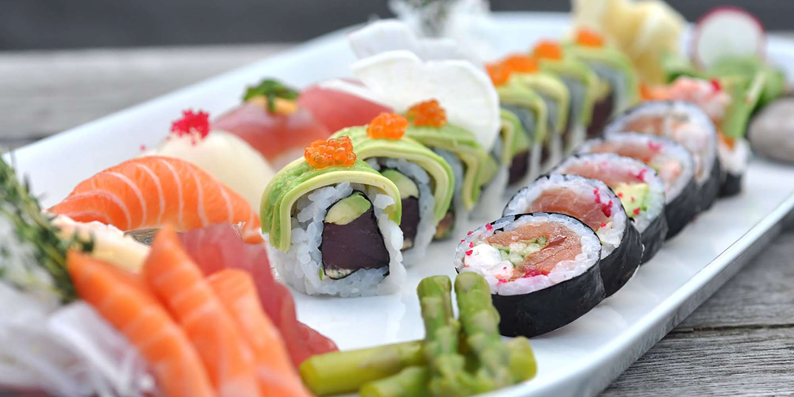
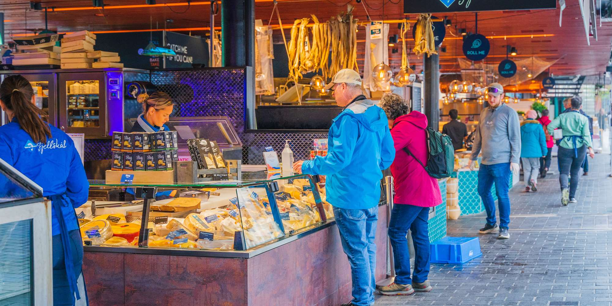
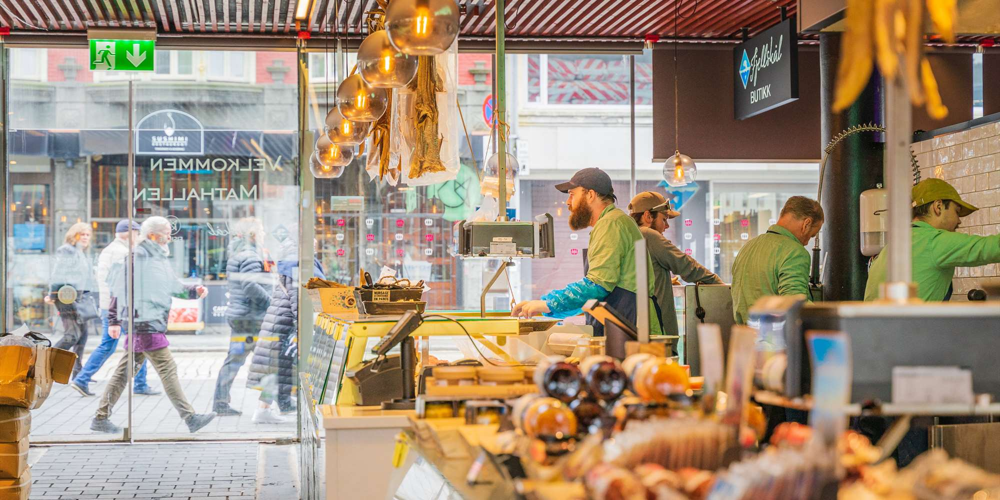
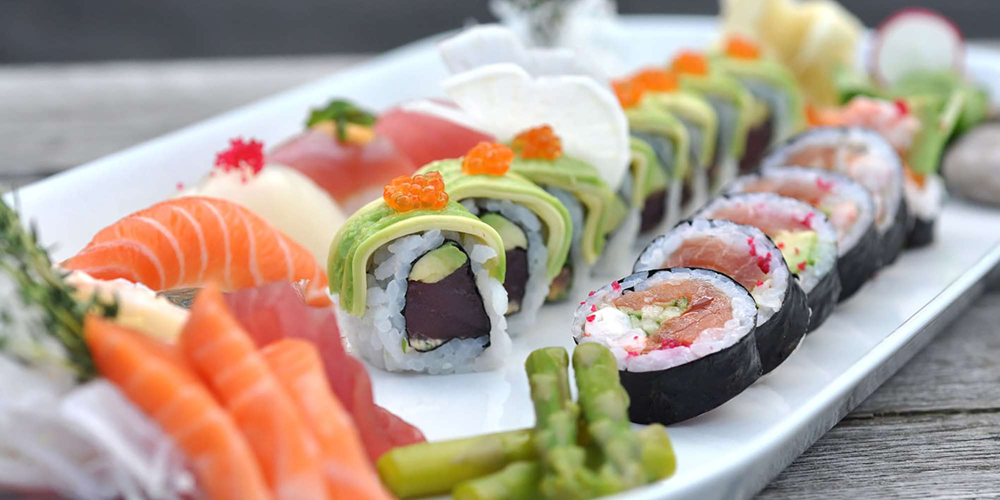
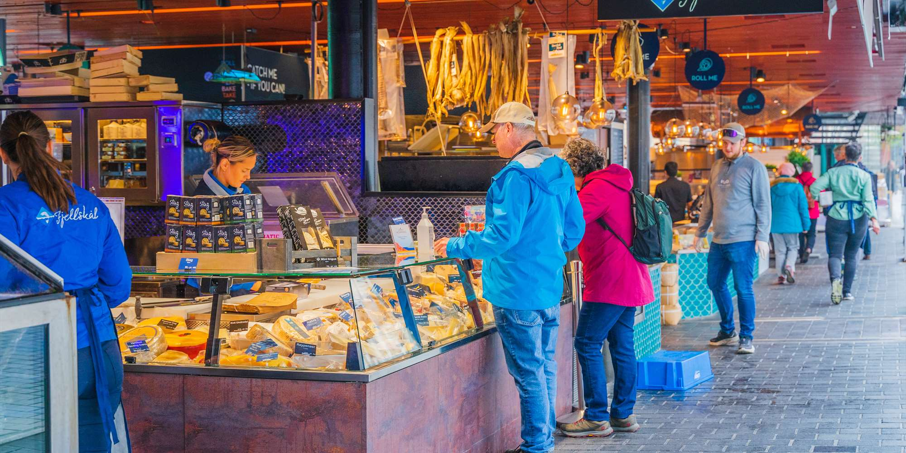
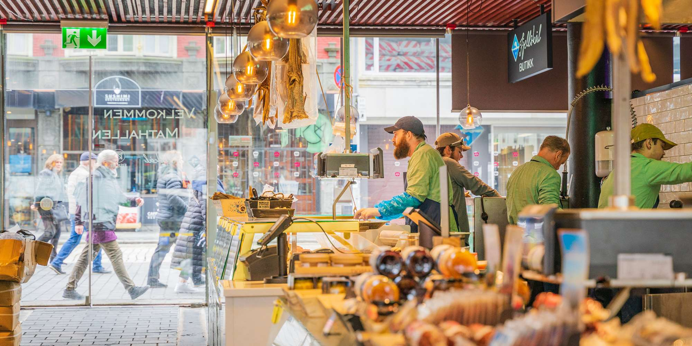

Bergen is a mesmerizing place. A place capable of inspiring even the most underwhelming person. Bergen has already won its place in history as it was named a World Cultural Heritage Site in 1979 by UNESCO. Not only that, but it is the hometown of composer Edvard Grieg whose house became an attraction and an ode to his work and genius.
 





The food scene, especially in the fish market, is an attraction in itself, from goose hotdogs to mini donuts that ruin other donuts, Bergen's food scene is varied and the best place to enjoy seafood dishes.
This little hometown is also known for its scenery and charming views. Mount Ulriken is perhaps one of the most famous mounts. The ascend, although harsh on an inexperienced hiker, certainly is enticing enough due to the gorgeous views. If hiking is not your vibe, there are less physically demanding activities such as riding boats or through the fords and train rides through the mountains.